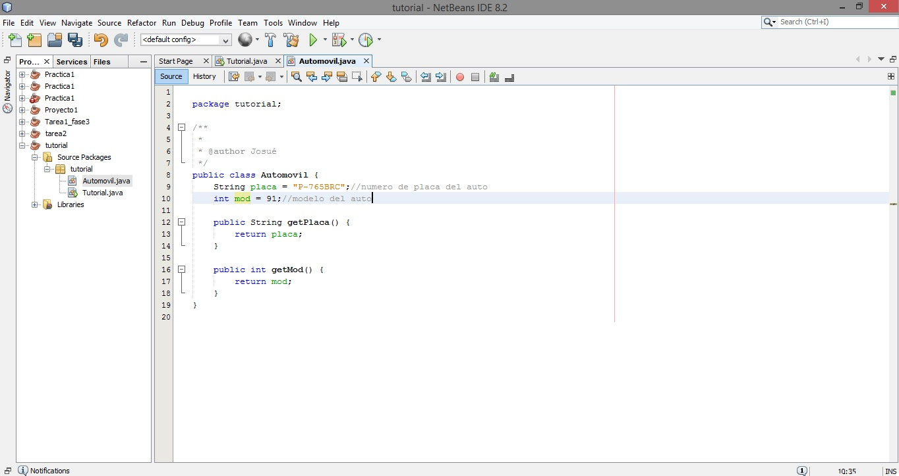

1. primero se ingresa al proyecto y en el paquete de clases se crea la clase | |
2. la clase debe ser nombrada diferenciandola de la clase main | |
|  | 3. se deben crear los atributos y metodos de la clase auxiliar
|
4. luego en la clase principal o clase main se llamara a la clase auxiliar
|